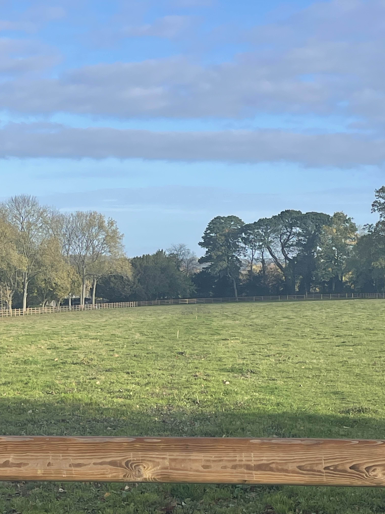
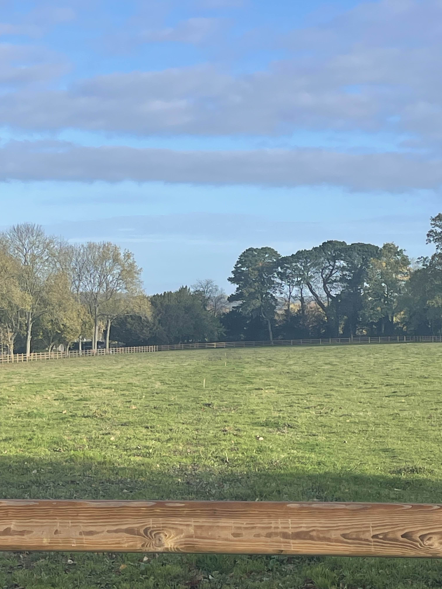

Projet : Le Haras du Quenay
Le projet consiste à installer Internet dans l’ensemble du Haras.
Le terrain étant totalement
vierge nous avons dû réfléchir à l'installation des éléments nécessaires du début à la fin.
C'est-à-dire de l'installation des chambres de tirage de fibre jusqu'aux tests de wifi.
Ce projet va se dérouler tout au
long
de mon année scolaire.
Tout d’abord, au semestre 3 nous allons nous concentrer sur le déploiement du réseau dans l’ensemble
du
Haras ainsi que des bornes wifi dans le château.
Puis, au semestre 4 nous nous concentrerons sur les autres bâtiments présents dans le Haras.
Ce
projet
est tout particulièrement difficile car il demande beaucoup de coordination des lots.
Mais
surtout, il a demandé une réelle réflexion lors de l'installation des bornes Wifi car la
principale contrainte était que les bornes ne devaient pas être visibles.
Tâches réalisées :
Tâche 1 : Collecte de données
L’objectif de cette mission était de faire une collecte et une analyse des besoins des
autres
lots.
Pour cela,
nous avons contacté les différents acteurs intervenant dans le Haras et nous
leur avons fourni un document de prérequis réseaux.
L'objectif de ce document est
d'évaluer les besoins réseaux des différents lots
techniques.
→ Ce document a été
réalisé par Nicolas LEBARBEY et moi même.
Grâce à ce document, nous avons pu
identifier
les points critiques des différents lots avant de commencer les travaux. Par exemple,
savoir le nombres de caméras qui allaient être installées pour adapter le plan IP.
Si on avait
attendu, on aurait pu se retrouver bloqués en plein chantier.
Le principal
problème était de synchroniser tout le monde. Chaque lot a ses propres contraintes et
son planning. Nous avons dû relancer plusieurs fois certains acteurs pour avoir
une réponse.
Tâche 2 : Plan IP
Une fois toutes les informations récupérées nous avons pu élaborer un plan IP.
Celui-ci est très important dans un projet, il représente les fondations de la
pyramide : sans cela rien ne tiens.
C'est ça que nous avons attribué un VLAN par
service et prévu un plan IP
large en /8 pour permettre une évolutivité du réseau !
→ La réflexion
demandée pour réaliser ce plan IP montre que j'ai compris comment organiser un réseau
de manière logique et efficace.
J'ai dû réfléchir à la séparation des services, aux besoins actuels mais aussi aux
besoins futurs, comme l’ajout de nouveaux équipements ou bâtiments.
Ce travail m'a permis de me rendre compte que le plan IP ne doit pas seulement
répondre aux besoins immédiats, mais aussi anticiper les évolutions du projet.
En prenant le temps de bien réfléchir dès le départ, nous évitons des changements
compliqués plus tard, qui pourraient impacter tout le réseau.
Tâche 3 : Tirer la fibre
Un aussi gros projet se fait toujours accompagné d'autres personnes !
Pour
commencer,
nous devions contacter l'entreprise Normandie drainage pour installer les chambres de
tirages afin de tirer la fibre entre la rue et la baie principale du Harras.
Puis
l'entreprise "CIRCET" qui est mandaté par la fibre COVAGE pour l’installation, a tiré la
fibre
dans le fourreaux PTT (FTTO).
Afin de leur faire gagner du temps et d’éviter les
erreurs, nous les avons guidés sur le site en leur indiquant les chemins à suivre et les
points d’arrivée.

 

→ Cette tâche m'a
permis de mettre en pratique concrètement la gestion de projet que j'ai pu apprendre tout au
long de mon 3ème semestre.
En effet, j'ai dû coordonner plusieurs intervenants
extérieurs, comprendre leurs contraintes et m’adapter à leur planning.
Cela m’a aussi
permis
de mieux comprendre le rôle des opérateurs dans la mise en place d’une liaison fibre et
l’importance d’une bonne communication entre les différentes parties.
Cette expérience m’a montré que la réussite d’un projet réseau dépend autant de l’aspect
technique que de l’organisation et du travail en équipe.
Tâche 4 : Travailler avec les autres lots
Une
fois les
plans Wifi terminés, nous avons réalisé que pour pouvoir cacher certaines bornes
Wifi nous allions avoir besoin de les cacher dans des meubles.
Nous avons alors
contacté les menuisiers et charpentiers présents sur le Harras pour pouvoir prévoir les
bornes DANS leurs meubles.
Puis une fois cela convenu, nous avons pu travailler
avec les électriciens car c'était eux qui étaient responsables de tirer les câbles
ethernet entre la baie et l'emplacement prédéfinis des bornes.
→ Cette tâche m'a
permis de comprendre l’importance de l’anticipation et de la communication entre les
différents lots.
Si nous n’avions pas pris contact assez tôt avec les menuisiers et les électriciens,
l’installation des bornes WiFi aurait été beaucoup plus compliquée, voire impossible à
certains endroits. (Surtout pour les bornes présentes dans/sous les meubles.)
Ce projet m’a montré que les choix techniques ont
très souvent un impact direct sur les autres corps de métier, et qu’il est important de
travailler ensemble dès le début.
Analyse réflexive :
Cette mission m'a permit de développer concrètement mes compétences en gestion de projet en
faisant de la coordination de lots.
J'ai compris qu'un projet réseau ne se résume pas à
la technique pure. Il faut savoir coordonner les gens, poser les bonnes questions au bon
moment et formaliser les échanges pour que tout le monde soit sur la même longueur d'onde.
Tâches réalisées :
Tâche 1 : Formation en ligne & configuration des switchs de niveau 3
Afin de pouvoir répartir internet dans l'ensemble du Haras, l'entreprise ING'IEC a fait
des plans pour que l'on puisse déterminer les départs de fibres entres baies.
ING'IEC est l'entreprise qui gère tout les lots courant fort et faible
(informatique = nous, sécurité, électricité...)
En
effet, il y a la baie principale (encadrée en bleu) qui permet un départ des fibres vers
tous les autres bâtiments. (encadrés en orange)
Nous avons
eu alors comme rôle de configurer des switch de niveau 3 de la marque ALCATEL.
Ce
qui a été une contrainte pour nous car habituellement nous ne travaillons pas avec
cette marque.
Alors, pour répondre à cette contrainte Benjamin MARION, Nicolas
LEBARBEY et moi même avons suivi une formation en ligne d'une semaine pour apprendre à
configurer ce switch.
Cela peut paraître anodin, mais dans un projet aussi exigent
que celui là consacrer une semaine à être formé représente un réel enjeux
d'un point de vu de la gestion du temps.
Une fois la formation terminée, nous avons
tous les trois configurés les switchs.
Nous les avons configurés de façon à ce
qu'ils ai
accès à tous les VLANs et nous avons fait le maximum de redondance possible en
répartissant les ports des vlans entre switchs.
Par exemple, tous les ports du VLAN
sécurité n'étaient pas
sur le même switch : car si ce switch "tombe" plus aucune caméra de surveillance ne
fonctionne.
Mais surtout, nous avons configuré un VPN sur une forti. Celle-ci est dans le même
réseau que les deux switchs, ce qui nous permet de les dépanner à
distance en cas de panne.
Pour centraliser les accès à distance de tous les switchs
présents dans le Harras ainsi que les bornes wifi nous utilisons omnivista.
Omnivista est un outil de supervision du réseau qui permet de
gérer et configurer à distance les équipements Alcatel depuis une interface
centralisée.

→ Cette tâche
m’a permis de développer mes compétences techniques sur de nouveaux équipements,
tout en comprenant l’importance de la supervision et de la
maintenance dans un réseau multi-site.
Cette tâche m'a permit de développer
concrètement les apprentissages critiques en liens avec le programme.
Tâche 2 : Installation des switchs dans les baies
Une fois la configuration terminée nous avons pu installer les switchs dans la baie
principale.
(Encadrée en bleu
dans le schéma de la tâche 1 mission 2)
Cependant, nous avons manqué d'anticipation
: les réglètes pour
accrocher les switchs dans la baie étaient trop grandes. Cela aurait pu être anticipé
lorsqu'on on a reçu les plans de l'entreprise ING'IEC.
La profondeur du switch ne
conrrespondait pas à la profondeur de la baie.
Sur l'image on retrouve dans la baie
de gauche tous les départs de fibre vers les autres bâtiments du Haras. (encadrée en
violet)
Et sur la
baie de droite, on y retrouve les deux switchs alcatel (encadrés en orange), une forti
(encadrée en vert)
qui sert de routeur ET de pare-feu (sur laquelle nous avons configuré un VPN pour
pouvoir être dans le même réseau qu'elle, comme si on était physiquement au harras)
→
Concrètement, j’ai appris qu’avant toute installation en baie, il est indispensable
de vérifier les dimensions exactes des équipements et leur compatibilité avec
l’infrastructure existante.
Si c’était à refaire, je prendrais plus de temps en amont pour croiser les plans,
les fiches techniques du matériel et les contraintes physiques du site.
Cette expérience m’a également permis de mieux comprendre le lien entre
l’architecture physique du réseau d'un point de vu de la fibre.
En effet, il y
a eu un imprévu lors de l'installation car les techniciens ont installé une fibre
monomode au lieu de mulitmode.
Cela nous a obligé à modifier toutes les
jartières fibre.
Et ce qui a par la même occasion engendré des problèmes : notamment au niveau des
fibres torsadée.
Les fibres étaient torsadées deux fois, donc elles
"s’annulait" et étaient devenu des fibres droites.
Nous avons alors enlevé une
torsade et cela a réglé notre problème.
Tâche 3 : Faire des plans Wifi
Une fois les baies installées nous avons pu nous lancer dans les plans wifis !
Pour
cela j'ai utilisé un logiciel en ligne qui se nomme ???? , qui permet de simuler la
couverture WiFi en fonction de l’emplacement des bornes et des contraintes du
bâtiment.
Cette tâche m'as permis d'évaluer le nombre des bornes wifi qui allaient être
nécessaires d'installer chez le client.
C’est déjà une première approche d’un point
de vue commercial, car chaque borne a un coût. Mais surtout d’un point de vue technique,
car une mauvaise estimation peut entraîner des zones mal couvertes ou au contraire un
suréquipement inutile.
En effet, il ne fallait pas perdre de vue la contrainte
principale du projet : les bornes WiFi ne devaient pas être visibles, tout en
garantissant un signal de très bonne qualité.
Cela a demandé plusieurs ajustements sur les emplacements afin de trouver le bon
compromis entre performance du réseau et contraintes esthétiques.
{kind=link}
→ Cette tâche
démontre ma capacité à analyser une zone de couverture et à m'adapter à des
contraintes réelles.
Elle m’a permis de mieux comprendre le fonctionnement et
les limites du WiFi dans un environnement réel.
Elle m’a aussi appris que la couverture radio ne dépend pas uniquement du nombre de
bornes, mais surtout de leur positionnement,leur orientation, de l’environnement et
des contraintes
imposées par le client.
Tâche 4 : Configuration des bornes Wifi
J'ai provisionné les bornes wifi sur un omnivista pour pouvoir garder un accès
à distance.
De plus, j'ai configuré les bornes de façon à ce qu'elles fassent du
"roaming" c'est-à-dire que lorsqu'on se déplace dans le château notre téléphone passe
tout seul
d'une borne à l'autre.
J'ai également configuré 2 Wifis : un pour le client et un
pour
les invités.
→ Concrètement, j'ai pu appliquer toutes mes connaissances acquises à l'université en début de semestre 3 sur le wifi.
Tâche 5 : Installation des bornes Wifi
A première vu cela semble plutôt simple car nous devions en théorie juste suivre le plan
Wifi fait en amont.
Mais en
réalité, c'était plus complexe que ça !
Certaines bornes wifi se sont retrouvées à
d'autres endroits qu'initialement prévu car les électriciens n'avaient pas réussi à
tirer les câbles comme prévu.
De plus, par manque de temps et de coordination une
borne s'est retrouvée derrière un réfrigirateur, sauf que ce frigo est directement dans le
meuble.
Cela n'a pas causé de problème de couverture car nous avions orienté la
borne de façon à ce qu'elle ne se retrouve pas orienté face au frigo.
Cependant,
d'un
point de vu pratique, si un jour cette borne venait à avoir besoin d'être dépannée ou
remplacée, cela sera très délicat.
Cependant, travailler en équipe comporte toujours des imprévus. En effet lors de
l'installation des câbles ethernet par les électriciens, certains employés
avaient tirés les câbles mais pas mit les noyaux ou bout des câbles. (Comme sur la
dernière image ci-dessous)
Ce qui nous a
alors retardé lors du déploiement des bornes et nous a obligé à quelques jours plus
tard.
De plus, les charpentiers et les peintres présents dans le château avaient eux aussi une
"deadline" très courte. Il arrivait souvent que nos travaux se chevauchent. Par fois
même pire, nous devions installer des bornes dans des meubles qui n'étaient pas encore
existants !
→ Concrètement, j'ai appris qu'un déploiement WiFi ne se résume pas à suivre un plan
théorique. Il faut constamment s'adapter aux contraintes terrain.
L'orientation de la borne
derrière le réfrigérateur m'a permis de comprendre l'importance de la directivité des
antennes et l'impact de l'environnement sur la propagation du signal.
Cette
expérience m'a également sensibilisé à l'importance de la coordination avec les autres
corps de métier dans un projet d'infrastructure réseau. Même si certains choix
d'installation sont discutables d'un point de vue maintenance (comme la borne derrière
le réfrigérateur).
Analyse réflexive :
Cette mission m'a permis d'apprendre et surtout de comprendre les enjeux qu'il pouvait y
avoir lors de la configuration et installation de bornes Wifi.
J'y ai appris
comment faire des plans de
converture wifi, test de couverture.
Elle a surtout développé ma compétence à
m'adapter
à des évènements imprévus et donc à renforcé mon expérience professionnelle.